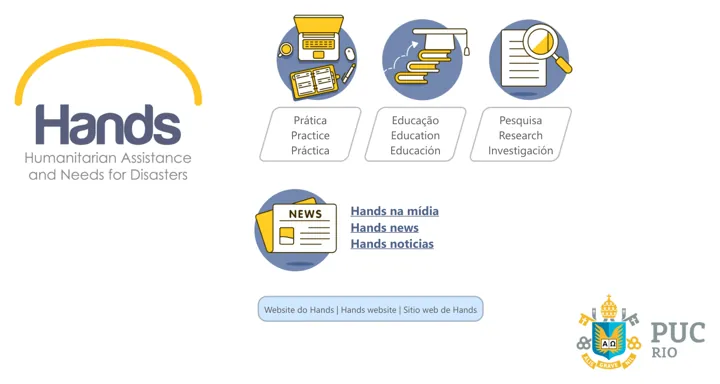
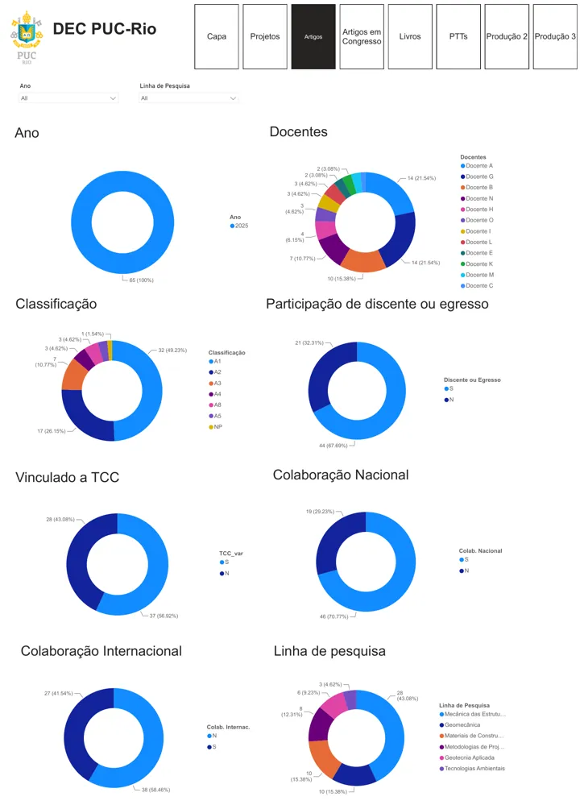
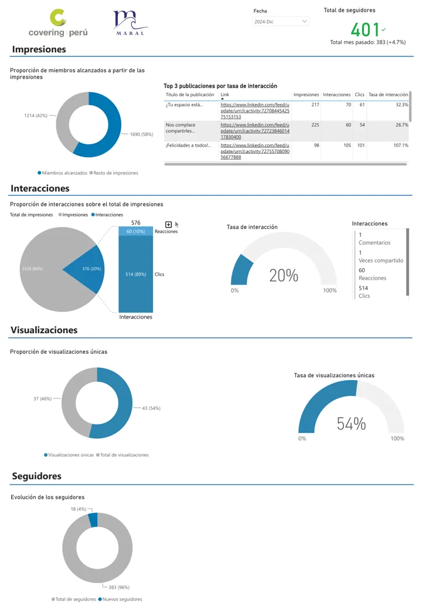

Bitcoin Mining as a Real Option
2026
Time-series forecasting and decision analysis for a wind-farm investment
Replicated the real-options valuation of Bastian-Pinto et al. (2021), where a Brazilian wind
farm can sell its early energy or mine Bitcoin, and verified the port path-by-path against the
authors' code. Replaced the paper's GBM with a bagged power-law + halving-cycle
forecast (STL, block bootstrap, mean reversion) and scored both against the realized 2019–2025
prices.
Three models gave three different investment recommendations; the realized path shows why the
starting-level assumption mattered more than the stochastic process.
- 0.25CRPS (vs 0.38)
- 96%90% coverage
- 50KMC paths
Read the write-up →
Original paper ↗
Distributed Disaster-Risk Classification on Databricks
2026
Porting a published model to Spark MLlib, then benchmarking it against AutoML and the original
Ported my published flood and landslide risk classifiers from single-node XGBoost to
Spark MLlib on Databricks serverless, over 101K household records and
112 features. The pipeline chains VectorAssembler → RobustScaler →
GBTClassifier, with cost-sensitive class weights for 1.4% and 5.4% positive rates, a grid
search via TrainValidationSplit, and imbalance-aware metrics (MCC, G-Mean,
GIBAα) computed with Spark aggregations.
Benchmarked three approaches on the same 2021 hold-out: the published model, the Spark
baseline and FLAML AutoML. AutoML ranked households best but missed more
affected ones at the default threshold; the published model, tuned on GIBA, stayed the most
balanced. The data is small, so the port shows the platform and its constraints, not a speed-up.
- 0.87Spark AUC (landslides)
- 0.91AutoML AUC (landslides)
- 28Khold-out households
Code ↗
Paper ↗
Artificially Intelligent Disaster Risk Classifiers
2021–2023
M.Sc. dissertation codebase — PUC-Rio
End-to-end supervised learning pipelines and spatial data processing to model and predict
household disaster risk in Peru, combining national household surveys with geoprocessed
hazard data. Covers feature construction, hyperparameter optimization and evaluation under
severe class imbalance.
Published in the International Journal of Disaster Risk Reduction (2023, 2025).
Code ↗
Paper ↗
OntoUML-Stone Evaluation Framework
2026
Automated evaluation for an ontology-grounded customer-service chatbot
Open-source experimental framework for evaluating LLM-based customer service agents against
formal ontologies. Automated experimental pipelines in Python integrate large and small
language models with handcrafted and automatically induced ontologies, plus retrieval
augmented generation, running on GPU infrastructure.
Code ↗
Curazone — a tool to care for populated areas
2021
Spatial COVID-19 risk mapping for economic reactivation
Geoprocessing of COVID-19 deaths and affected populations combined with spatial econometrics
to identify local contagion patterns, supporting a framework for phased economic reactivation.
Published in MDPI Sustainability.
Paper ↗

Lab Hands — Research Laboratory Dashboard
2023–present
Interactive analytics for research group performance
Custom interactive dashboards tracking the main indicators of researcher and student
performance and scientific production, plus automated information collection and
interpretation built on Google Workspace.
See the dashboard →

Graduate Program Monitoring — DEC PUC-Rio
2025–2026
Power BI report for the graduate program in Civil Engineering
A 14-page report covering students and alumni, supervision, research projects and scientific
production by Qualis classification, research line and collaboration, with each production
indicator compared against its yearly target for 2025–2028.
See the dashboard →

Social Media Analytics — Covering Perú & Maral
2024–2025
Monthly LinkedIn and Instagram reporting for a client in Peru
Power BI report with a month selector and a month-by-month view: reach, impressions,
interactions by type, engagement rate, follower growth and best-performing posts, split by
content type (stories, posts and reels).
See the dashboard →
Nationwide Public Policy Mapping Survey
2023–2024
UNDP & Government of Brazil
Designed and implemented policy surveys targeting municipal, state and federal public officials
to assess the quality of risk and disaster management policies, in support of the
Plano Nacional de Proteção e Defesa Civil. Combined descriptive analysis of survey data
with natural language processing of interview transcripts.
Data Science Course Materials
2023–2024
Teaching assistance — PUC-Rio
Practical learning tasks for training and evaluating machine learning models, used in the
graduate data science course at PUC-Rio.
Code ↗